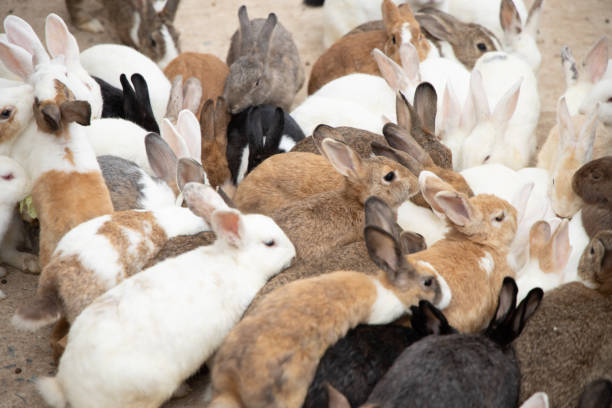

Here You Can Get Information About Your Favourite Pets
Dogs


The term “domestic dog” refers to any of several hundred breeds of dog in the world today. While these animals vary drastically in appearance, every dog—from the Chihuahua to the Great Dane—is a member of the same species, Canis familiaris. This separates domestic dogs from wild canines, such as coyotes, foxes, and wolves.
Domestic dogs are mostly kept as pets, though many breeds are capable of surviving on their own, whether it’s in a forest or on city streets. A third of all households worldwide have a dog, according to a 2016 consumer insights study. This makes the domestic dog the most popular pet on the planet.
Evolutionary origins
All dogs descend from a species of wolf, but not the gray wolf (Canis lupus), like many people assume. In fact, DNA evidence suggests that the now-extinct wolf ancestor to modern dogs was Eurasian. However, scientists are still working to understand exactly what species gave rise to dogs.
When dogs broke off from their wild ancestors is also a matter of mystery, but genetics suggest that it occurred between 15,000 and 30,000 years ago.
While it’s impossible to say exactly how a wild wolf species became a domesticated dog, most scientists believe the process happened gradually as wolves became more comfortable with humans. Perhaps wolves started down this path simply by eating human scraps. Many generations later, humans might have encouraged wolves to stay near by actively feeding them. Later still, those wolves may have been welcomed into the human home and eventually bred to encourage certain traits. All of this is thought to have unfolded over thousands of years.
Cats

From ancient Egyptians to today’s internet users, people have always loved their cats.
In the U.S. alone, cats reign over about 45.3 million households. There are at least 45 domestic breeds, which differ widely in features such as coat color, tail length, hair texture, and temperament, according to the Cat Fancier’s Association.
The Maine Coon is the largest, with males reaching an average of 3.5 feet long. The smallest breed is the Singapura, native to Singapore, with adult females weighing as little as four pounds. One of the most unusual-looking cats is the Sphynx, a mostly hairless cat known for being robust and intelligent.
Like their big cat cousins, house cats are obligate carnivores, meaning they have to eat meat to stay healthy. Though they’ve been domesticated for thousands of years, these predators have maintained a strong hunting instinct, relying on stealth to stalk prey and attack with sharp claws and teeth. (Learn surprising things you never knew about your cat.)
As mostly nocturnal animals, cats have excellent vision and hearing, with ears that can turn like satellite dishes. Their reputation for having nine lives stems in part from their ability to navigate difficult environments, for example using their tail to balance and mostly land their lean, muscular bodies on all fours. Cushioning discs between vertebrae also give cat bodies exceptional flexibility and speed.
Rabbits


In 1859, European rabbits (Oryctolagus cuniculus) were introduced into the Australian wild so that they could be hunted. Thomas Austin, a wealthy settler who lived in Victoria, Australia, had 13 European wild rabbits sent to him from across the world, which he let roam free on his estate. From this one backyard sanctuary, it took only around 50 years for these invasive (meaning non-native to the land) rabbits to spread across the entire continent.
Their numbers became so large that they destroyed crops and land, leading to soil erosion. They also negatively affected agriculture and plants by overgrazing. Not only did the rabbits wreak havoc on Australian croplands, they contributed to the decline of native plant and animal species. Even the Commonwealth Environment Protection and Biodiversity Conservation Act 1999—the Australian government’s main environmental legislation—lists the various effects of feral rabbits, such as land degradation, as a “threatening process.”
These rabbits are extremely adaptive, which has played a role in their spread across the Australian continent. All the rabbits need is soil that is fit to burrow and short grasses to graze on. Since these conditions are fairly easy to come by, they can adapt to new habitats such as the deserts and plains of Australia as easily as the meadows of Europe.